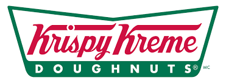
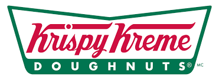

Pick your favourite food!

Sushi
Sushi is a japanese origin food that mostly made from fish and rice. This food really suitable for every occasions, such as family dining, casual dining, or dining with friends.

Spaghetti
Spaghetti is an italian origin food that is made out of wheat flour. Often called as pasta, spaghetti is loved by many people around the world.

Fish and Chips
Fish and Chips is an English origin food that is made out of potato and fish. We usually use Dori fish to deep-fry it then make it a perfect Fish and Chips.

Fried Rice
Fried Rice is indonesian origin food that is made out of rice. There are several versions of Fried Rice, but the most famous is Special Fried Rice with sunny side Egg
 
